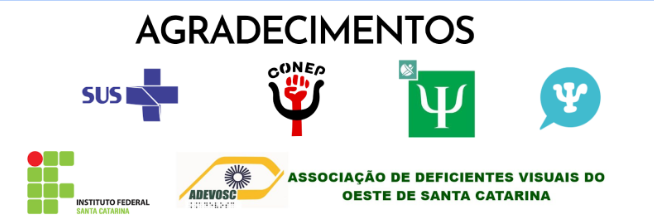

Descrição de imagem: CUIDAR DA SAÚDE É CUIDAR DA FAMÍLIA. O banner possui fundo azul escuro e as letras são brancas. Ao canto esquerdo superior, está escrito: CUIDAR DA SAÚDE É CUIDAR DA FAMÍLIA. E entre a frase há uma grande família, formada por 10 pessoas em formato de sombra em preto. Nela, há uma criança segurando a mão de seu pai e sua mãe, mais dois irmãos menores, uma pessoa sentada em uma cadeira de rodas e mais um casal que segura a mão de duas crianças. Ao lado direito da imagem, está escrito, também em branco: "DISQUE 136 - SUS". O Disque saúde para emergências do Sistema Único de Saúde.
O QUE É O CAPS?
Os Centros de Atenção Psicossocial (CAPS) são unidades de saúde pública de caráter comunitário nos municípios, e contam com profissionais habilitados para atender diversas demandas, tais quais a reabilitação neuropsicológica para dependentes químicos, acolhimento com psicoterapia e psiquiatria, terapia ocupacional, medicação assistida e atendimento humanizado ao núcleo familiar e domiciliar para os pacientes, sempre buscando reinserção e integração social.
O Sistema Único de Saúde (SUS) é um dos maiores e mais complexos sistemas de saúde pública do mundo, abrangendo desde o simples atendimento para avaliação da pressão arterial, até o transplante de órgãos, garantindo acesso integral, universal e gratuito para toda a população do país visando a prevenção e a promoção da saúde” (Governo Federal, 1999)
SERVIÇOS
Nas suas diferentes modalidades os CAPS oferecem atendimento clínico em regime de atenção diária à população, com equipe multiprofissional que reúne médicos, assistentes sociais, psicólogos, psiquiatras, enfermeiros, terapêutas ocupacionais, entre outros agentes da rede pública.
PROCEDIMENTOS
A pessoa que procura pelo CAPS é acolhida e participa da elaboração de um Projeto Terapêutico Singular (PTS), específico para as suas necessidades e demandas – o que pode incluir situações de intenso sofrimento psíquico e crises relacionadas ao consumo prejudicial de álcool e outras drogas.
Por meio de ações individuais e coletivas, buscam a reinserção social de seus usuários, pelo acesso a trabalho, lazer, moradia, exercício dos direitos civis e fortalecimento dos laços familiares e comunitários.
As consultas com psicólogos e psiquiatras do SUS não possuem custo. O Sistema Único de Saúde foi feito para ser público, gratuito e de qualidade. Quanto às medicações, a maioria dos medicamentos estarão disponíveis gratuitamente na farmácia da sua unidade CAPS e você receberá as indicações do seu médico.
2)OS MEDICAMENTOS CAUSAM DEPENDÊNCIA?
Sob orientação médica e dosagem adequada, não há risco de dependência. Por isso, tire todas as dúvidas com seu médico e sinta-se à vontade para relatar todos os sintomas e efeitos de cada remédio em seu organismo. Isso ajudará muito na eficácia e tempo de duração do tratamento.
3) QUAL É O NÚMERO DA SECRETARIA DE SAÚDE
(49) 3321-0090
4)QUAL DEVE SER O PRIMEIRO PASSO AO BUSCAR AJUDA?
Buscar ajuda profissional é fundamental. Orientamos você a buscar atendimento na Unidade Básica de Saúde (postinho) mais próximo à você e solicitar consulta médica psiquiátrica ou psicólogo. Não tenha medo, uma equipe de profissionais irá acompanhá-lo da melhor forma possível.
SEGURO, COMPLETO, GRATUITO E DE QUALIDADE

Descrição de imagem: AGRADECIMENTOS: Sistema Único de Saúde (SUS), CONEP - Conselho Nacional de Estudantes de Psicologia, Serviços de Atendimento de Psicologia da UNOESC, Serviços de Psicologia da Unochapecó, Instituto Federal de Santa Catarina, Associação de Deficientes Visuais do Oeste de Santa Catarina.